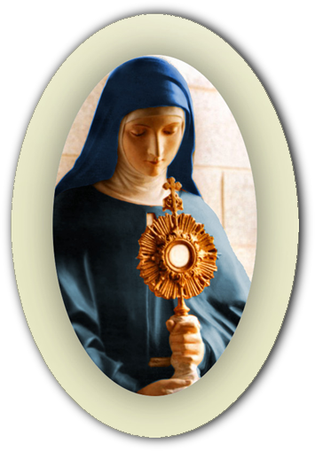
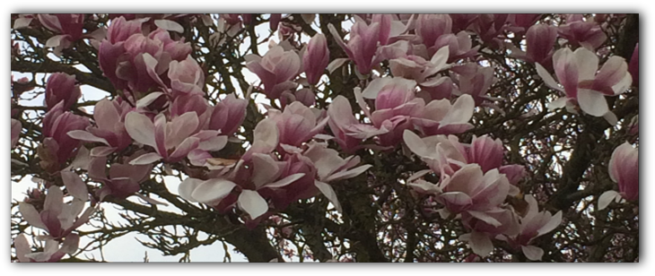

| contact information | where we are | |||
| Monastero di Santa Chiara Via Malintoppa 12 01020 Acquapendente (VT) info@monasterodiacquapendente.it |



Deep down, a religious vocation is always a mystery. It is the choice to risk one’s life for God, it is one’s answer to Love.
To the eyes of the world, a wholly contemplative life is a life wasted. In truth, it is as wasteful as the perfumed ointment that Mary Magdalene poured out on Christ’s feet, while He Himself came to her defense: “Let her do”. It is the “waste” of a love that gives its whole self without seeking anything in return, as Jesus gave Himself up for us.
Many are unable to grasp the sense of a life such as ours, which seems entirely given over to some mysterious ideal, almost always because they are unaware that this “ideal” is a Person: Jesus. Every vocation is an answer to a voice calling, it is never a one-sided decision, it is a personal meeting with the Lord, a meeting capable of changing one’s life.
To the eyes of the world, a wholly contemplative life is a life wasted. In truth, it is as wasteful as the perfumed ointment that Mary Magdalene poured out on Christ’s feet, while He Himself came to her defense: “Let her do”. It is the “waste” of a love that gives its whole self without seeking anything in return, as Jesus gave Himself up for us.
Many are unable to grasp the sense of a life such as ours, which seems entirely given over to some mysterious ideal, almost always because they are unaware that this “ideal” is a Person: Jesus. Every vocation is an answer to a voice calling, it is never a one-sided decision, it is a personal meeting with the Lord, a meeting capable of changing one’s life.
Each one of us, before choosing our path in life, must ask Our Lord, with the very words of St. Francis, “Lord, what would You have me do?” If you hear His call in your heart and you feel He is choosing you to become His bride, make sure to give an answer with humble simplicity: “Here I am, Lord!” If, on the other hand, you have not yet taken the step of considering what God wants from you, don’t waste time. Learning one’s vocation and carrying it out with generosity is the “conditio sine qua non” to be happy here on earth, to proceed more easily through the path of eternal salvation which is abundantly full of graces given by the Lord along the way.
We invite young ladies who wish to understand whether God is calling them to the cloistered contemplative life to contact our Monastery in order to explore the possibility of a vocation and learn more about the spirituality of the Poor Clares of the Immaculate as lived by our monastic community of Acquapendente. Our community prays continually that those whom Our Lord calls to this life in the enclosure may respond with joy and courage.
Our unceasing prayer, following the rhythm of silence, like a heart beat, is nourished by the vital dialogue of Divine Love that is exchanged between Christ and His Spouse.
We experience the commitment to live cloistered life as a privilege, given to us by the Lord, confirmed by Holy Mother Church, which allows us to dedicate our entire life to become witnesses and efficient instruments of eternal salvation, as wanted by God for the entire world and obtained through the infinite graces of Christ on the Cross.
We invite young ladies who wish to understand whether God is calling them to the cloistered contemplative life to contact our Monastery in order to explore the possibility of a vocation and learn more about the spirituality of the Poor Clares of the Immaculate as lived by our monastic community of Acquapendente. Our community prays continually that those whom Our Lord calls to this life in the enclosure may respond with joy and courage.
Our unceasing prayer, following the rhythm of silence, like a heart beat, is nourished by the vital dialogue of Divine Love that is exchanged between Christ and His Spouse.
We experience the commitment to live cloistered life as a privilege, given to us by the Lord, confirmed by Holy Mother Church, which allows us to dedicate our entire life to become witnesses and efficient instruments of eternal salvation, as wanted by God for the entire world and obtained through the infinite graces of Christ on the Cross.

© 2014 - 2019